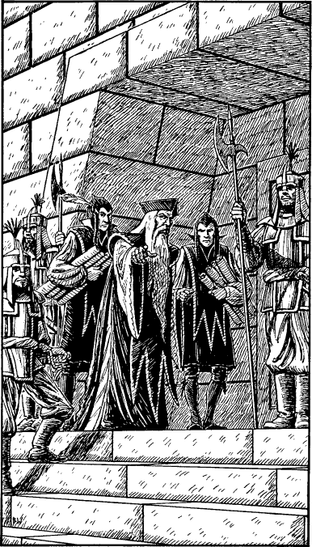

323
It is a grim grey building, devoid of decoration or colour, its stark bare walls serving to remind the Tahouese of its sober purpose. It is a place where justice is meted out to wrongdoers and harsh punishments are imposed. All trials are conducted before a magistrate and his decision is final; there are no juries in Tahou. The Chief Magistrate presides over crimes that are serious enough to warrant the death penalty and, as you stare at the courthouse from the shadows of a doorway, your pulse quickens when you see his carriage draw up outside. An old man with long grey hair and a beard, he is wearing the purple and silver robes of the judiciary. He is accompanied by court guards and scribes, who help him to climb the steps to his private chambers located within the court building. When he reaches the top step he halts, turns, and points his finger at you.

If you have ever visited the city of Varetta or a hut on the Ruanon Pike in a previous Lone Wolf adventure, turn to 304.
If you have never visited either of these places, turn to 263.